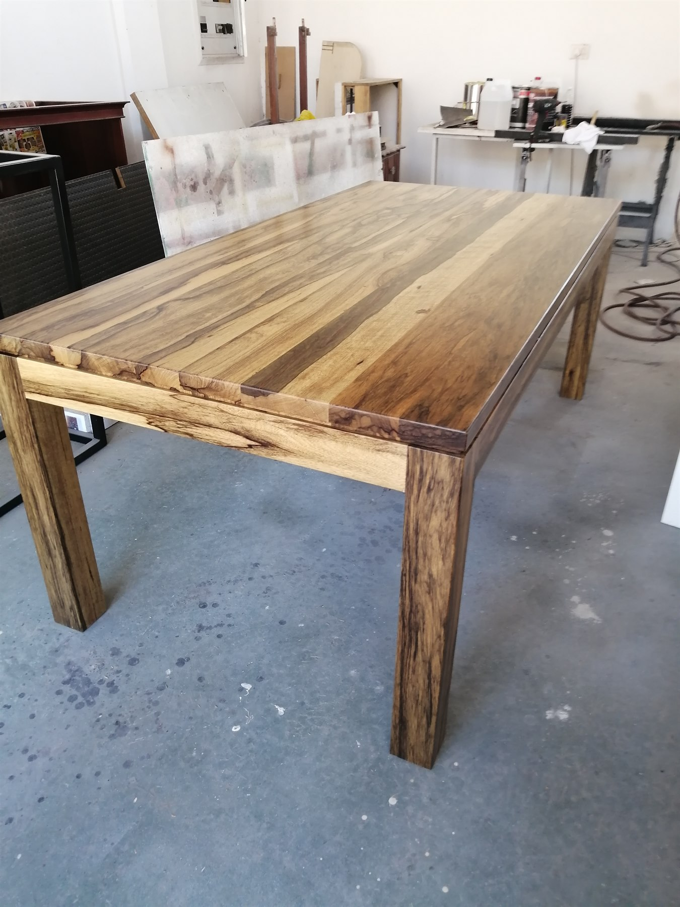

Custom Solid Wood Furniture
One-of-a-Kind Pieces Made for Your Space.
Some spaces need something specific — a piece that cannot be found off the shelf. We build custom solid wood furniture around your size, style, and purpose.
- Custom tables
- Cabinets
- Storage units
- Feature pieces
- Solid wood furniture
- Made-to-order designs